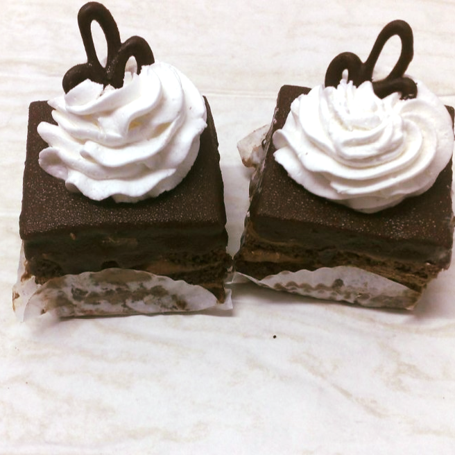
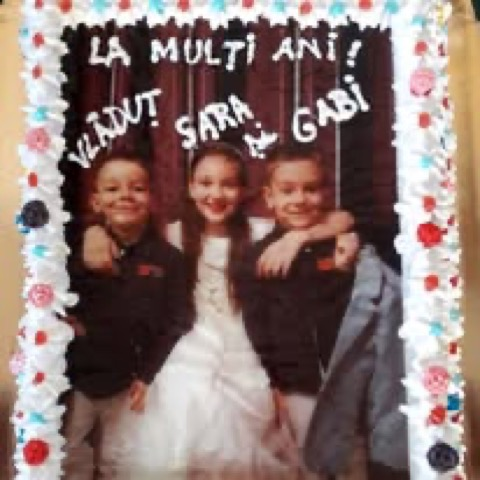
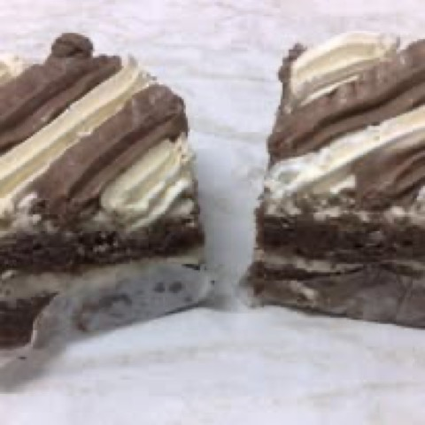
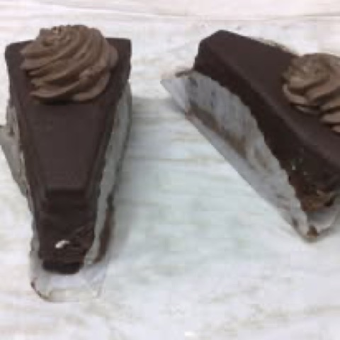
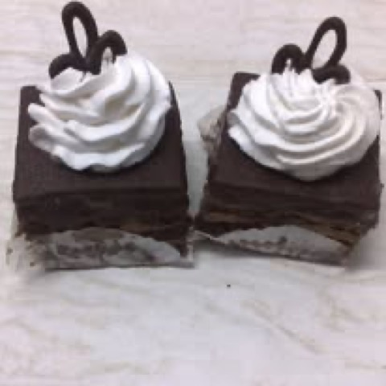

Torturi personalizate
Torturi de aniversare și torturi speciale pentru copii, gândite după ideea ta — decor lucrat manual și blaturi proaspete.

Pitești · din 2003
Laborator de cofetărie, patiserie și simigerie în Pitești, din 2003. Torturi personalizate, torturi cu poză, prăjituri de casă și cozonaci — totul proaspăt, pregătit zilnic în atelierul nostru.
Ce pregătim
Un laborator de cofetărie, patiserie și simigerie complet — de la torturile de aniversare până la prăjiturile de zi cu zi și produsele calde de simigerie. Totul iese proaspăt din atelier.
Torturi de aniversare și torturi speciale pentru copii, gândite după ideea ta — decor lucrat manual și blaturi proaspete.
Punem chipul sărbătoritului direct pe tort, printat comestibil — pentru zile de naștere de neuitat, exact ca în amintiri.
Prăjituri de casă și cozonaci pregătiți proaspăt — deserturi de fiecare zi, alături de produsele de patiserie.
Torturi pentru evenimentele mari — botezuri, nunți și petreceri — și produse de simigerie pentru mesele voastre.
Din vitrină
Câteva dintre torturile și prăjiturile ieșite din laboratorul Pati-Panif — fotografii reale de la noi din vitrină.




Despre noi
Cofetăria Pati-Panif este prezentă în viața economică din Pitești din 2003. Suntem un laborator de cofetărie, patiserie și simigerie, unde fiecare tort, prăjitură și cozonac se pregătește în atelierul propriu.
De la torturile personalizate și cele cu poză, până la produsele de simigerie de zi cu zi, punem accent pe același lucru dintotdeauna: prospețimea. Produsele proaspete pentru clienții noștri au fost mereu motto-ul nostru.
„Prospețimea produselor pentru clienții noștri.”
Motto-ul nostru, din 2003Vino la noi
Suntem în cartierul Găvana, pe Strada Alunului. Sună-ne pentru o comandă de tort sau treci pragul cofetăriei.
Cofetărie · patiserie · simigerie. Torturi personalizate, torturi cu poză, prăjituri, cozonaci și torturi de botez și nuntă — proaspete, din laborator propriu.